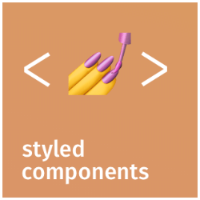
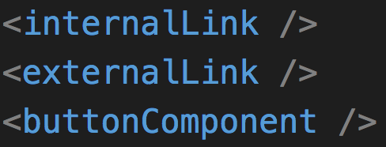
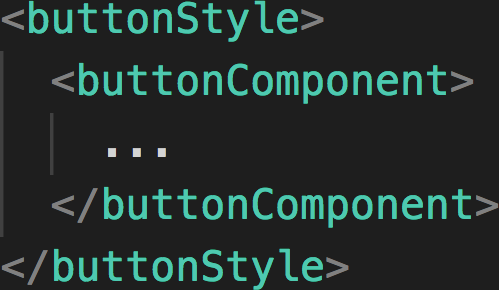
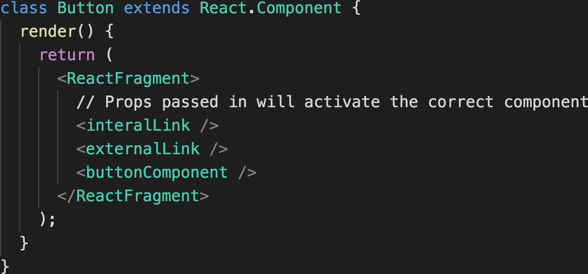

A case-study
a button component I was working on...

This feels a bit complex...
Take me there
😒
aria-role on a link
(which behaves as a link)
What is a component?
How big should it be?
What makes it composable?
What is the right level of abstraction?
Stand-alone components for primitives?

But how to style in a DRY way?
Style as a stand-alone component?

But adds markup jank...
Compose as sub-components?

Most promising...
Leaving it as-is
is 👌
That itchy feeling you have in the back of your head that something could be more elegant... 24/7.